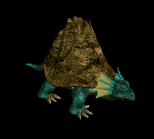
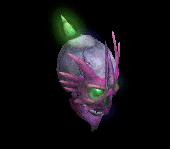
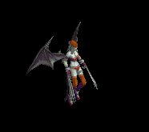
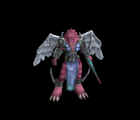

ステッキ(リトル武器) をドロップするmob一覧
一覧ページへ
| 攻撃骸骨戦士 | アンデット | 一般2 | |||||||
|---|---|---|---|---|---|---|---|---|---|
 | 両手剣(380) | ステッキ(250) | 盾(380) | 足(210) | 槍投擲機(190) | 帰還(150) | 鎌(380) | ||
| 死の斧 | アンデット | セミ1 | |||||||
 | 両手剣(390) | ステッキ(260) | 盾(390) | 足(220) | 槍投擲機(200) | 帰還(160) | 鎌(390) | ||
| 地獄の騎士 | アンデット | ボス1 | |||||||
 | 鈍器(470) | ステッキ(310) | 矢(470) | 鎧(260) | 爪(240) | 能力向上1(190) | 魔弾(470) | ||
| スリップワーカー | アンデット | 一般1 | |||||||
 | スリング(410) | ステッキ(270) | 弾(410) | 兜・帽子(230) | 首(210) | ブローチ(120) | |||
| ルナティック | アンデット | 一般2 | |||||||
 | スリング(380) | ステッキ(250) | 弾(380) | 足(210) | 首(190) | ブローチ(130) | |||
| プレーガー | アンデット | 一般3 | |||||||
 | スリング(360) | ステッキ(240) | 弾(360) | 腰(200) | 首(180) | ブローチ(140) | |||
| ジャンキー | アンデット | セミ1 | |||||||
 | スリング(390) | ステッキ(260) | 鍵(30) | 兜・帽子(220) | イヤリング(200) | ブローチ(150) | |||
| アライブコープス | アンデット | ボス1 | |||||||
 | スリング(470) | ステッキ(310) | 鍵(50) | 足(260) | 首(240) | ブローチ(160) | |||
| シーフ | 人間 | 一般1 | |||||||
 | 投擲(410) | ステッキ(270) | イベント(410) | 職業鎧(230) | 指輪(210) | 特殊1(160) | |||
| ローグ | 人間 | 一般2 | |||||||
 | 投擲(380) | ステッキ(250) | 鍵(10) | 職業鎧(210) | 爪(190) | 特殊1(150) | |||
| スナッチャー | 人間 | 一般3 | |||||||
 | 投擲(360) | ステッキ(140) | 鍵(30) | 職業鎧(200) | 爪(180) | 特殊1(140) | |||
| ロバー | 人間 | セミ1 | |||||||
 | 投擲(390) | ステッキ(260) | 弾(390) | 職業鎧(220) | 爪(200) | 特殊1(160) | |||
| アサシン | 人間 | セミ2 | |||||||
 | 投擲(420) | ステッキ(280) | 矢(420) | 職業鎧(230) | 爪(210) | 特殊1(170) | 魔弾(420) | ||
| レッドアイ魔法師 | 人間 | 一般4 | |||||||
 | ステッキ(300) | 笛(200) | 矢(300) | マント(170) | 冠(150) | ブローチ(180) | 魔弾(300) | ||
| レッドアイ幹部 | 人間 | セミ1 | |||||||
 | ステッキ(390) | 鞭(260) | CP回復(390) | マント(220) | 冠(200) | ブローチ(190) | |||
| レッドアイ元老 | 人間 | セミ2 | |||||||
 | ステッキ(420) | 笛(280) | 矢(420) | マント(230) | 冠(210) | ブローチ(200) | 魔弾(420) | ||
| レッドアイ法術師 | 人間 | ボス1 | |||||||
 | ステッキ(470) | 杖(310) | 状態異常回復2(120) | マント(260) | 冠(240) | ブローチ(210) | 本(310) | ||
| レッドアイ元帥 | 人間 | ボス2 | |||||||
 | ステッキ(490) | 笛(330) | 弾(490) | マント(270) | イヤリング(250) | ブローチ(220) | |||
| リザードチャージ | 悪魔 | 一般3 | |||||||
 | ステッキ(360) | 槍(240) | イベント(360) | 職業鎧(200) | 首(180) | 能力向上2(140) | 箒(240) | ||
| リザードトルーパ | 悪魔 | 一般4 | |||||||
 | ステッキ(300) | 弓(200) | 矢(300) | 職業鎧(170) | 首(150) | 能力向上2(120) | 銃(200) | 魔弾(300) | |
| ナーガナイト | 悪魔 | セミ2 | |||||||
 | ステッキ(420) | 弓(280) | HP回復(420) | 職業鎧(230) | 首(210) | 能力向上2(170) | 銃(280) | ||
| ワーラット | 悪魔 | 一般2 | |||||||
 | 投擲(380) | ステッキ(250) | 矢(380) | 足(210) | 槍投擲機(190) | 帰還(150) | 魔弾(380) | ||
| ラットシーフ | 悪魔 | 一般4 | |||||||
 | 投擲(300) | ステッキ(200) | 矢(300) | 足(170) | 槍投擲機(150) | 能力向上2(120) | 魔弾(300) | ||
| オーガオフィサー | 悪魔 | セミ3 | |||||||
 | ステッキ(450) | 弓(300) | HP回復(450) | 鎧(250) | イヤリング(230) | 能力向上1(180) | 銃(300) | ||
| ホーンド | 悪魔 | セミ1 | |||||||
 | ステッキ(390) | 翼(260) | 状態異常回復2(100) | マント(220) | 手首(200) | 宝石(160) | 水晶(260) | ||
| 淡水亀 | 動物 | 一般1 | |||||||
 | ステッキ(410) | 杖(270) | 盾(410) | 鎧(230) | 冠(210) | 能力向上2(160) | 本(270) | ||
| ヒュージタートル | 動物 | 一般2 | |||||||
 | ステッキ(380) | 杖(250) | 状態異常回復2(100) | 鎧(210) | 冠(190) | 能力向上2(150) | 本(250) | ||
| ビッグシェル | 動物 | 一般3 | |||||||
|  | ステッキ(360) | 杖(240) | 盾(360) | 鎧(200) | 冠(180) | 能力向上2(140) | 本(240) | ||
| トライアングル | 動物 | セミ1 | |||||||
 | ステッキ(390) | 杖(260) | CP回復(390) | 鎧(220) | 冠(200) | 能力向上2(160) | 本(260) | ||
| タートルドラゴン | 動物 | ボス1 | |||||||
 | ステッキ(470) | 杖(310) | 盾(470) | 鎧(260) | 冠(240) | 能力向上2(190) | 本(310) | ||
| 大型モグラ | 動物 | 一般3 | |||||||
 | 両手剣(360) | ステッキ(240) | 弾(360) | 職業鎧(200) | 指輪(180) | 能力向上1(140) | 鎌(360) | ||
| ロードブローカー | 動物 | ボス1 | |||||||
 | 笛(470) | ステッキ(310) | 弾(470) | 職業鎧(260) | 指輪(240) | 能力向上1(190) | |||
| ロックゴーレム | 神獣 | 一般4 | |||||||
 | 鎌(100) | 両手剣(100) | ステッキ(200) | ||||||
| トーチリザード | 神獣 | 一般1 | |||||||
 | 銃(100) | 弓(100) | ステッキ(270) | ||||||
| ファイアドレイク | 神獣 | 一般2 | |||||||
 | 銃(100) | 弓(100) | ステッキ(250) | ||||||
| サラマンダー | 神獣 | セミ1 | |||||||
 | 銃(100) | 弓(100) | ステッキ(260) | ||||||
| イフリィト | 神獣 | セミ2 | |||||||
 | 銃(100) | 弓(100) | ステッキ(280) | ||||||
| スルタン | 神獣 | ボス2 | |||||||
 | 銃(100) | 弓(100) | ステッキ(330) | ||||||
| ボイドラスター | 神獣 | 一般3 | |||||||
 | 笛(360) | ステッキ(240) | |||||||
| ペールライト | 神獣 | ボス3 | |||||||
 | 笛(510) | ステッキ(340) | |||||||
| 攻撃骸骨戦士Ex | アンデット | 一般2 | |||||||
| 両手剣(380) | ステッキ(250) | 盾(380) | 足(210) | 槍投擲機(190) | 帰還(150) | 鎌(380) | ||
| 死の斧Ex | アンデット | セミ1 | |||||||
| 両手剣(450) | ステッキ(300) | 盾(450) | 足(250) | 槍投擲機(230) | 帰還(180) | 鎌(450) | ||
| 地獄の騎士Ex | アンデット | ボス1 | |||||||
| 鈍器(1200) | ステッキ(800) | 矢(1200) | 鎧(670) | 爪(600) | 能力向上1(480) | 魔弾(1200) | ||
| スリップワーカーEx | アンデット | 一般1 | |||||||
| スリング(410) | ステッキ(270) | 弾(410) | 兜・帽子(230) | 首(210) | ブローチ(120) | |||
| ルナティックEx | アンデット | 一般2 | |||||||
| スリング(380) | ステッキ(250) | 弾(380) | 足(210) | 首(190) | ブローチ(130) | |||
| プレーガーEx | アンデット | 一般3 | |||||||
| スリング(360) | ステッキ(240) | 弾(360) | 腰(200) | 首(180) | ブローチ(140) | |||
| ジャンキーEx | アンデット | セミ1 | |||||||
| スリング(450) | ステッキ(300) | 鍵(30) | 兜・帽子(250) | イヤリング(230) | ブローチ(150) | |||
| アライブコープスEx | アンデット | ボス1 | |||||||
| スリング(1200) | ステッキ(800) | 鍵(60) | 足(670) | 首(600) | ブローチ(160) | |||
| シーフEx | 人間 | 一般1 | |||||||
| 投擲(410) | ステッキ(270) | イベント(410) | 職業鎧(230) | 指輪(210) | 特殊1(160) | |||
| ローグEx | 人間 | 一般2 | |||||||
| 投擲(380) | ステッキ(250) | 鍵(20) | 職業鎧(210) | 爪(190) | 特殊1(150) | |||
| スナッチャーEx | 人間 | 一般3 | |||||||
| 投擲(360) | ステッキ(240) | 鍵(30) | 職業鎧(200) | 爪(180) | 特殊1(140) | |||
| ロバーEx | 人間 | セミ1 | |||||||
| 投擲(450) | ステッキ(300) | 弾(450) | 職業鎧(250) | 爪(230) | 特殊1(180) | |||
| アサシンEx | 人間 | セミ2 | |||||||
| 投擲(650) | ステッキ(430) | 矢(650) | 職業鎧(360) | 爪(330) | 特殊1(260) | 魔弾(650) | ||
| レッドアイ魔法師Ex | 人間 | 一般4 | |||||||
| ステッキ(300) | 笛(200) | 矢(300) | マント(170) | 冠(150) | ブローチ(180) | 魔弾(300) | ||
| レッドアイ幹部Ex | 人間 | セミ1 | |||||||
| ステッキ(450) | 鞭(300) | CP回復(450) | マント(250) | 冠(230) | ブローチ(190) | |||
| レッドアイ元老Ex | 人間 | セミ2 | |||||||
| ステッキ(650) | 笛(430) | 矢(650) | マント(360) | 冠(330) | ブローチ(200) | 魔弾(650) | ||
| レッドアイ法術師Ex | 人間 | ボス1 | |||||||
| ステッキ(1200) | 杖(800) | 状態異常回復2(300) | マント(670) | 冠(600) | ブローチ(210) | 本(800) | ||
| レッドアイ元帥Ex | 人間 | ボス2 | |||||||
| ステッキ(2000) | 笛(1330) | 弾(2000) | マント(1110) | イヤリング(1000) | ブローチ(220) | |||
| リザードチャージEx | 悪魔 | 一般3 | |||||||
| ステッキ(360) | 槍(240) | イベント(360) | 職業鎧(200) | 首(180) | 能力向上2(140) | 箒(240) | ||
| リザードトルーパEx | 悪魔 | 一般4 | |||||||
| ステッキ(300) | 弓(200) | 矢(300) | 職業鎧(170) | 首(150) | 能力向上2(120) | 銃(200) | 魔弾(300) | |
| ナーガナイトEx | 悪魔 | セミ2 | |||||||
| ステッキ(650) | 弓(430) | HP回復(650) | 職業鎧(360) | 首(330) | 能力向上2(260) | 銃(430) | ||
| ワーラットEx | 悪魔 | 一般2 | |||||||
| 投擲(380) | ステッキ(250) | 矢(380) | 足(210) | 槍投擲機(190) | 帰還(150) | 魔弾(380) | ||
| ラットシーフEx | 悪魔 | 一般4 | |||||||
| 投擲(300) | ステッキ(200) | 矢(300) | 足(170) | 槍投擲機(150) | 能力向上2(120) | 魔弾(300) | ||
| オーガオフィサーEx | 悪魔 | セミ3 | |||||||
| ステッキ(800) | 弓(530) | HP回復(800) | 鎧(440) | イヤリング(400) | 能力向上1(320) | 銃(530) | ||
| ホーンドEx | 悪魔 | セミ1 | |||||||
| ステッキ(450) | 翼(300) | 状態異常回復2(110) | マント(250) | 手首(230) | 宝石(180) | 水晶(300) | ||
| 淡水亀Ex | 動物 | 一般1 | |||||||
| ステッキ(410) | 杖(270) | 盾(410) | 鎧(230) | 冠(210) | 能力向上2(160) | 本(270) | ||
| ヒュージタートルEx | 動物 | 一般2 | |||||||
| ステッキ(380) | 杖(250) | 状態異常回復2(100) | 鎧(210) | 冠(190) | 能力向上2(150) | 本(250) | ||
| ビッグシェルEx | 動物 | 一般3 | |||||||
| ステッキ(360) | 杖(240) | 盾(360) | 鎧(200) | 冠(180) | 能力向上2(140) | 本(240) | |||
| トライアングルEx | 動物 | セミ1 | |||||||
| ステッキ(450) | 杖(300) | CP回復(450) | 鎧(250) | 冠(230) | 能力向上2(180) | 本(300) | ||
| タートルドラゴンEx | 動物 | ボス1 | |||||||
| ステッキ(1200) | 杖(800) | 盾(1200) | 鎧(670) | 冠(600) | 能力向上2(480) | 本(800) | ||
| 大型モグラEx | 動物 | 一般3 | |||||||
| 両手剣(360) | ステッキ(240) | 弾(360) | 職業鎧(200) | 指輪(180) | 能力向上1(140) | 鎌(360) | ||
| ロードブローカーEx | 動物 | ボス1 | |||||||
| 笛(1200) | ステッキ(800) | 弾(1200) | 職業鎧(670) | 指輪(600) | 能力向上1(480) | |||
| ロックゴーレムEx | 神獣 | 一般4 | |||||||
| 両手剣(300) | ステッキ(200) | 状態異常回復2(80) | 足(170) | 槍投擲機(150) | 腕刺青(150) | 鎌(300) | ||
| トーチリザードEx | 神獣 | 一般1 | |||||||
| 弓(410) | ステッキ(270) | 矢(410) | 足(230) | 冠(210) | 能力向上2(160) | 銃(410) | 魔弾(410) | |
| ファイアドレイクEx | 神獣 | 一般2 | |||||||
| 弓(380) | ステッキ(250) | 矢(380) | 兜・帽子(210) | 冠(190) | 能力向上2(150) | 銃(380) | 魔弾(380) | |
| サラマンダEx | 神獣 | セミ1 | |||||||
| 弓(450) | ステッキ(300) | 矢(450) | 足(250) | 冠(230) | 能力向上2(180) | 銃(450) | 魔弾(450) | |
| イフリィトEx | 神獣 | セミ2 | |||||||
| 弓(650) | ステッキ(430) | 矢(650) | マント(360) | 首(330) | 能力向上2(260) | 銃(650) | 魔弾(650) | |
| スルタンEx | 神獣 | ボス2 | |||||||
| 弓(2000) | ステッキ(1330) | 矢(2000) | 足(1110) | 首(1000) | 能力向上2(800) | 銃(2000) | 魔弾(2000) | |
| ボイドラスターEx | 神獣 | 一般3 | |||||||
| 笛(360) | ステッキ(240) | 盾(360) | マント(200) | 指輪(180) | 特殊1(140) | |||
| ペールライトEx | 神獣 | ボス3 | |||||||
| 笛(2800) | ステッキ(1870) | 盾(2800) | 腰(1560) | 手首(1400) | 帰還(1120) | |||
| 攻撃骸骨戦士Zin | アンデット | 一般2 | |||||||
| 両手剣(1380) | ステッキ(920) | 盾(1380) | 足(770) | 槍投擲機(690) | 帰還(550) | 鎌(1380) | ||
| 死の斧Zin | アンデット | セミ1 | |||||||
| 両手剣(650) | ステッキ(430) | 盾(650) | 足(360) | 槍投擲機(330) | 帰還(260) | 鎌(650) | ||
| 地獄の騎士Zin | アンデット | ボス1 | |||||||
| 鈍器(1000) | ステッキ(670) | 矢(1000) | 鎧(560) | 爪(500) | 能力向上1(400) | 魔弾(1000) | ||
| スリップワーカーZin | アンデット | 一般1 | |||||||
| スリング(1210) | ステッキ(810) | 弾(1210) | 兜・帽子(670) | 首(610) | ブローチ(120) | |||
| ルナティックZin | アンデット | 一般2 | |||||||
| スリング(1380) | ステッキ(920) | 弾(1380) | 足(770) | 首(690) | ブローチ(130) | |||
| プレーガーZin | アンデット | 一般3 | |||||||
| スリング(1560) | ステッキ(1040) | 弾(1560) | 腰(870) | 首(780) | ブローチ(140) | |||
| ジャンキーZin | アンデット | セミ1 | |||||||
| スリング(650) | ステッキ(430) | 鍵(60) | 兜・帽子(360) | イヤリング(330) | ブローチ(150) | |||
| アライブコープスZin | アンデット | ボス1 | |||||||
| スリング(1000) | ステッキ(670) | 鍵(130) | 足(560) | 首(500) | ブローチ(160) | |||
| シーフZin | 人間 | 一般1 | |||||||
| 投擲(1210) | ステッキ(810) | イベント(1210) | 職業鎧(670) | 指輪(610) | 特殊1(480) | |||
| ローグZin | 人間 | 一般2 | |||||||
| 投擲(1380) | ステッキ(920) | 鍵(110) | 職業鎧(770) | 爪(690) | 特殊1(550) | |||
| スナッチャーZin | 人間 | 一般3 | |||||||
| 投擲(1560) | ステッキ(1040) | 鍵(170) | 職業鎧(870) | 爪(780) | 特殊1(620) | |||
| ロバーZin | 人間 | セミ1 | |||||||
| 投擲(650) | ステッキ(430) | 弾(650) | 職業鎧(360) | 爪(330) | 特殊1(260) | |||
| アサシンZin | 人間 | セミ2 | |||||||
| 投擲(750) | ステッキ(500) | 矢(750) | 職業鎧(420) | 爪(380) | 特殊1(300) | 魔弾(750) | ||
| レッドアイ魔法師Zin | 人間 | 一般4 | |||||||
| ステッキ(1200) | 笛(800) | 矢(1200) | マント(670) | 冠(600) | ブローチ(180) | 魔弾(1200) | ||
| レッドアイ幹部Zin | 人間 | セミ1 | |||||||
| ステッキ(650) | 鞭(430) | CP回復(650) | マント(360) | 冠(330) | ブローチ(190) | |||
| レッドアイ元老Zin | 人間 | セミ2 | |||||||
| ステッキ(750) | 笛(500) | 矢(750) | マント(420) | 冠(380) | ブローチ(200) | 魔弾(750) | ||
| レッドアイ法術師Zin | 人間 | ボス1 | |||||||
| ステッキ(1000) | 杖(670) | 状態異常回復2(250) | マント(560) | 冠(500) | ブローチ(210) | 本(670) | ||
| レッドアイ元帥Zin | 人間 | ボス2 | |||||||
| ステッキ(1100) | 笛(730) | 弾(1100) | マント(610) | イヤリング(550) | ブローチ(220) | |||
| リザードチャージZin | 悪魔 | 一般3 | |||||||
| ステッキ(1560) | 槍(1040) | イベント(1560) | 職業鎧(870) | 首(780) | 能力向上2(620) | 箒(1040) | ||
| リザードトルーパZin | 悪魔 | 一般4 | |||||||
| ステッキ(1200) | 弓(800) | 矢(1200) | 職業鎧(670) | 首(600) | 能力向上2(480) | 銃(800) | 魔弾(1200) | |
| ナーガナイトZin | 悪魔 | セミ2 | |||||||
| ステッキ(750) | 弓(500) | HP回復(750) | 職業鎧(420) | 首(380) | 能力向上2(300) | 銃(500) | ||
| ワーラットZin | 悪魔 | 一般2 | |||||||
| 投擲(1380) | ステッキ(920) | 矢(1380) | 足(770) | 槍投擲機(690) | 帰還(550) | 魔弾(1380) | ||
| ラットシーフZin | 悪魔 | 一般4 | |||||||
| 投擲(1200) | ステッキ(800) | 矢(1200) | 足(670) | 槍投擲機(600) | 能力向上2(480) | 魔弾(1200) | ||
| オーガオフィサーZin | 悪魔 | セミ3 | |||||||
| ステッキ(900) | 弓(600) | HP回復(900) | 鎧(500) | イヤリング(450) | 能力向上1(360) | 銃(600) | ||
| ホーンドZin | 悪魔 | セミ1 | |||||||
| ステッキ(650) | 翼(430) | 状態異常回復2(160) | マント(360) | 手首(330) | 宝石(260) | 水晶(430) | ||
| 淡水亀Zin | 動物 | 一般1 | |||||||
| ステッキ(1210) | 杖(810) | 盾(1210) | 鎧(670) | 冠(610) | 能力向上2(480) | 本(810) | ||
| ヒュージタートルZin | 動物 | 一般2 | |||||||
| ステッキ(1380) | 杖(920) | 状態異常回復2(350) | 鎧(770) | 冠(690) | 能力向上2(550) | 本(920) | ||
| ビッグシェルZin | 動物 | 一般3 | |||||||
| ステッキ(1560) | 杖(1040) | 盾(1560) | 鎧(870) | 冠(780) | 能力向上2(620) | 本(1040) | |||
| トライアングルZin | 動物 | セミ1 | |||||||
| ステッキ(650) | 杖(430) | CP回復(650) | 鎧(360) | 冠(330) | 能力向上2(260) | 本(430) | ||
| タートルドラゴンZin | 動物 | ボス1 | |||||||
| ステッキ(1000) | 杖(670) | 盾(1000) | 鎧(560) | 冠(500) | 能力向上2(400) | 本(670) | ||
| 大型モグラZin | 動物 | 一般3 | |||||||
| 両手剣(1560) | ステッキ(1040) | 弾(1560) | 職業鎧(870) | 指輪(780) | 能力向上1(620) | 鎌(1560) | ||
| ロードブローカーZin | 動物 | ボス1 | |||||||
| 笛(1000) | ステッキ(670) | 弾(1000) | 職業鎧(560) | 指輪(500) | 能力向上1(400) | |||
| ロックゴーレムZin | 神獣 | 一般4 | |||||||
| 両手剣(1200) | ステッキ(800) | 状態異常回復2(300) | 足(670) | 槍投擲機(600) | 腕刺青(150) | 鎌(1200) | ||
| トーチリザードZin | 神獣 | 一般1 | |||||||
| 弓(1210) | ステッキ(810) | 矢(1210) | 足(670) | 冠(610) | 能力向上2(480) | 銃(1210) | 魔弾(1210) | |
| ファイアドレイクZin | 神獣 | 一般2 | |||||||
| 弓(1380) | ステッキ(920) | 矢(1380) | 兜・帽子(770) | 冠(690) | 能力向上2(550) | 銃(1380) | 魔弾(1380) | |
| サラマンダZin | 神獣 | セミ1 | |||||||
| 弓(650) | ステッキ(430) | 矢(650) | 足(360) | 冠(330) | 能力向上2(260) | 銃(650) | 魔弾(650) | |
| イフリィトZin | 神獣 | セミ2 | |||||||
| 弓(750) | ステッキ(500) | 矢(750) | マント(420) | 首(380) | 能力向上2(300) | 銃(750) | 魔弾(750) | |
| スルタンZin | 神獣 | ボス2 | |||||||
| 弓(1100) | ステッキ(730) | 矢(1100) | 足(610) | 首(550) | 能力向上2(440) | 銃(1100) | 魔弾(1100) | |
| ボイドラスターZin | 神獣 | 一般3 | |||||||
| 笛(1560) | ステッキ(1040) | 盾(1560) | マント(870) | 指輪(780) | 特殊1(620) | |||
| ペールライトZin | 神獣 | ボス3 | |||||||
| 笛(1200) | ステッキ(800) | 盾(1200) | 腰(670) | 手首(600) | 帰還(480) | |||
 | 弓(1560) | 片手剣(1040) | 矢(1560) | グローブ(900) | 手首(780) | 腕刺青(170) | クロー(1040) | 銃(1560) | 魔弾(1560) |
| ジャイアント骸骨 Zin | アンデット | 一般4 | |||||||
 | 宝石(30) | 状態異常回復2(50) | 腕刺青(90) | 肩刺青(130) | ステッキ(170) | HP回復(200) | |||
| ジャイアント骸骨2 Zin | アンデット | セミ2 | |||||||
 | 能力向上2(80) | 職業鎧(140) | 牙(250) | 職業鎧(360) | ステッキ(470) | イベント(550) | 双剣(250) | ||
| ジャイアント骸骨3 Zin | アンデット | ボス1 | |||||||
 | 冠(150) | 宝石(250) | 十字架(450) | 十字架(650) | ステッキ(850) | 杖(1000) | 本(1000) | ||
| バイキングヘッド1 Zin | アンデット | セミ2 | |||||||
 | 冠(80) | 状態異常回復2(140) | 腕刺青(250) | 十字架(360) | ステッキ(470) | 杖(550) | 本(550) | ||
| バイキングヘッド3 Zin | アンデット | ボス2 | |||||||
 | 能力向上2(270) | 鈍器(450) | 牙(810) | 職業鎧(1170) | ステッキ(1530) | 杖(1800) | 本(1800) | 双剣(810) | |
| バイキングヘッド4 Zin | アンデット | ボス3 | |||||||
 | 冠(360) | CP回復(600) | 宝石(1080) | 職業鎧(1560) | ステッキ(2040) | 杖(2400) | 本(2400) | ||
| デスマスク1 Zin | アンデット | セミ3 | |||||||
 | 職業鎧(110) | 職業鎧(180) | 腕刺青(320) | 十字架(460) | ステッキ(600) | 杖(700) | 本(700) | ||
| デスマスク2 Zin | アンデット | ボス1 | |||||||
 | 冠(150) | 鈍器(250) | 牙(450) | 職業鎧(650) | ステッキ(850) | 職業鎧(1000) | 双剣(450) | ||
| デスマスク4 Zin | アンデット | ボス3 | |||||||
|  | 冠(360) | 鈍器(600) | 牙(1080) | 職業鎧(1560) | ステッキ(2040) | 杖(2400) | 本(2400) | 双剣(1080) | |
| 逃亡魔法師Zin | 人間 | 一般3 | |||||||
 | 宝石(70) | 鈍器(200) | 両手剣(130) | 槍(100) | ステッキ(30) | グローブ(40) | 鎌(130) | 箒(100) | |
| 逃亡魔法師2 Zin | 人間 | セミ1 | |||||||
 | 投擲(90) | CP回復(260) | 両手剣(180) | 槍(140) | ステッキ(40) | HP回復(50) | 鎌(180) | 箒(140) | |
| 逃亡魔法師4 Zin | 人間 | ボス1 | |||||||
 | 投擲(250) | ブローチ(750) | 両手剣(500) | 十字架(400) | ステッキ(100) | イベント(150) | 鎌(500) | ||
| 逃亡ハンター1 Zin | 人間 | セミ1 | |||||||
 | 能力向上2(90) | 鈍器(260) | 両手剣(180) | 鞭(140) | ステッキ(40) | 宝石(50) | 鎌(180) | ||
| 逃亡ハンター2 Zin | 人間 | セミ3 | |||||||
 | 投擲(180) | 鈍器(530) | 帰還(350) | 槍(280) | ステッキ(70) | グローブ(110) | 箒(280) | ||
| 逃亡ハンター4 Zin | 人間 | ボス2 | |||||||
 | 投擲(450) | 鈍器(1350) | 両手剣(900) | 槍(720) | ステッキ(180) | グローブ(270) | 鎌(900) | 箒(720) | |
| 脱獄犯1 Zin | 人間 | セミ2 | |||||||
 | 鍵(140) | 鈍器(410) | 帰還(280) | CP回復(220) | ステッキ(60) | グローブ(80) | |||
| 脱獄犯3 Zin | 人間 | ボス1 | |||||||
 | 鍵(250) | 鈍器(750) | 両手剣(500) | 能力向上1(400) | ステッキ(100) | グローブ(150) | 鎌(500) | ||
| 魔女 Zin | 悪魔 | 一般3 | |||||||
 | 鎧(170) | イヤリング(210) | 足(90) | 十字架(50) | ステッキ(30) | 盾(10) | |||
| 魔女1 Zin | 悪魔 | セミ1 | |||||||
 | 鎧(230) | ブローチ(280) | CP回復(120) | 笛(70) | ステッキ(40) | イベント(20) | |||
| 魔女3 Zin | 悪魔 | ボス2 | |||||||
 | 鎧(1170) | イヤリング(1440) | 足(590) | 十字架(360) | ステッキ(180) | 盾(90) | |||
| サキュバス Zin | 悪魔 | 一般4 | |||||||
 | 鎧(130) | ブローチ(160) | 弾(70) | 笛(40) | ステッキ(20) | HP回復(10) | |||
| サキュバス1 Zin | 悪魔 | セミ1 | |||||||
 | 鎧(230) | イヤリング(280) | 足(120) | 能力向上1(70) | ステッキ(40) | 盾(20) | |||
| サキュバス3 Zin | 悪魔 | ボス2 | |||||||
|  | 鎧(1170) | 状態異常回復2(1440) | 足(590) | 笛(360) | ステッキ(180) | CP回復(90) | |||
| パンタズドリーム Zin | 悪魔 | セミ1 | |||||||
 | 鎧(230) | ブローチ(280) | 足(120) | 笛(70) | ステッキ(40) | 杖(20) | 本(20) | ||
| パンタズドリーム1 Zin | 悪魔 | セミ2 | |||||||
 | 鍵(360) | イヤリング(440) | 帰還(180) | 笛(110) | ステッキ(60) | 盾(30) | |||
| パンタズドリーム3 Zin | 悪魔 | ボス1 | |||||||
 | 鎧(650) | イヤリング(800) | 腕刺青(330) | 能力向上1(200) | ステッキ(100) | 盾(50) | |||
| 堕天使1 Zin | 神獣 | セミ1 | |||||||
 | 鍵(160) | イヤリング(230) | 足(120) | 手首(20) | ステッキ(40) | グローブ(90) | |||
| 堕天使3 Zin | 神獣 | ボス2 | |||||||
 | 鍵(810) | イヤリング(1170) | 弾(630) | 手首(90) | ステッキ(180) | イベント(450) | |||
| 堕天使4 Zin | 神獣 | ボス3 | |||||||
 | 投擲(1080) | イヤリング(1560) | 足(840) | 手首(120) | ステッキ(240) | グローブ(600) | |||
| イーグルヘッド Zin | 神獣 | 一般4 | |||||||
|  | 投擲(90) | 弾(130) | 足(70) | 手首(10) | ステッキ(20) | 宝石(50) | |||
| イーグルヘッド2 Zin | 神獣 | セミ3 | |||||||
 | 鍵(320) | イヤリング(460) | 足(250) | 手首(40) | ステッキ(70) | HP回復(180) | |||
| イーグルヘッド4 Zin | 神獣 | ボス3 | |||||||
 | 鍵(1080) | イヤリング(1560) | 足(840) | 手首(120) | ステッキ(240) | グローブ(600) | |||
| ライオンヘッド Zin | 神獣 | セミ1 | |||||||
 | 投擲(160) | イヤリング(230) | CP回復(120) | 能力向上2(20) | ステッキ(40) | イベント(90) | |||
| ライオンヘッド1 Zin | 神獣 | セミ2 | |||||||
 | 投擲(250) | イヤリング(360) | 足(190) | 手首(30) | ステッキ(60) | グローブ(140) | |||
| ライオンヘッド3 Zin | 神獣 | ボス1 | |||||||
 | 投擲(450) | 状態異常回復2(650) | 足(350) | 能力向上1(50) | ステッキ(100) | HP回復(250) | |||
| レッドアイ魔法師 | 人間 | 一般4 | |||||||
| ステッキ(300) | 笛(200) | 矢(300) | マント(170) | 冠(150) | ブローチ(180) | 魔弾(300) | ||
| レッドアイ隊員 | 人間 | セミ1 | |||||||
| ステッキ(390) | 鞭(260) | CP回復(390) | マント(220) | 冠(200) | ブローチ(190) | |||
| レッドアイ隊長 | 人間 | セミ2 | |||||||
| ステッキ(420) | 笛(280) | 矢(420) | マント(230) | 冠(210) | ブローチ(200) | 魔弾(420) | ||
| レッドアイ大術師 | 人間 | ボス1 | |||||||
| ステッキ(470) | 杖(310) | 状態異常回復2(120) | マント(260) | 冠(240) | ブローチ(210) | 本(310) | ||
| レッドアイ議長 | 人間 | ボス2 | |||||||
| ステッキ(490) | 笛(330) | 弾(490) | マント(270) | イヤリング(250) | ブローチ(220) | |||
| レッドアイ魔法師 Ex | 人間 | 一般4 | |||||||
| ステッキ(300) | 笛(200) | 矢(300) | マント(170) | 冠(150) | ブローチ(180) | 魔弾(300) | ||
| レッドアイ隊員 Ex | 人間 | セミ1 | |||||||
| ステッキ(450) | 鞭(300) | CP回復(450) | マント(250) | 冠(230) | ブローチ(190) | |||
| レッドアイ隊長 Ex | 人間 | セミ2 | |||||||
| ステッキ(650) | 笛(430) | 矢(650) | マント(360) | 冠(330) | ブローチ(200) | 魔弾(650) | ||
| レッドアイ大術師 Ex | 人間 | ボス1 | |||||||
| ステッキ(1200) | 杖(800) | 状態異常回復2(300) | マント(670) | 冠(600) | ブローチ(210) | 本(800) | ||
| レッドアイ議長 Ex | 人間 | ボス2 | |||||||
| ステッキ(2000) | 笛(1330) | 弾(2000) | マント(1110) | イヤリング(1000) | ブローチ(220) | |||
| ワニ亀 | 動物 | 一般1 | |||||||
| ステッキ(410) | 杖(270) | 盾(410) | 鎧(230) | 冠(210) | 能力向上2(160) | 本(270) | ||
| 象亀 | 動物 | 一般2 | |||||||
| ステッキ(380) | 杖(250) | 状態異常回復2(100) | 鎧(210) | 冠(190) | 能力向上2(150) | 本(250) | ||
| 鎧亀 | 動物 | 一般3 | |||||||
| ステッキ(360) | 杖(240) | 盾(360) | 鎧(200) | 冠(180) | 能力向上2(140) | 本(240) | |||
| 神秘の亀 | 動物 | セミ1 | |||||||
| ステッキ(390) | 杖(260) | CP回復(390) | 鎧(220) | 冠(200) | 能力向上2(160) | 本(260) | ||
| 竜王亀 | 動物 | ボス1 | |||||||
| ステッキ(470) | 杖(310) | 盾(470) | 鎧(260) | 冠(240) | 能力向上2(190) | 本(310) | ||
| ワニ亀 Ex | 動物 | 一般1 | |||||||
| ステッキ(410) | 杖(270) | 盾(410) | 鎧(230) | 冠(210) | 能力向上2(160) | 本(270) | ||
| 象亀 Ex | 動物 | 一般2 | |||||||
| ステッキ(380) | 杖(250) | 状態異常回復2(100) | 鎧(210) | 冠(190) | 能力向上2(150) | 本(250) | ||
| 鎧亀 Ex | 動物 | 一般3 | |||||||
| ステッキ(360) | 杖(240) | 盾(360) | 鎧(200) | 冠(180) | 能力向上2(140) | 本(240) | |||
| 神秘の亀 Ex | 動物 | セミ1 | |||||||
| ステッキ(450) | 杖(300) | CP回復(450) | 鎧(250) | 冠(230) | 能力向上2(180) | 本(300) | ||
| 竜王亀 Ex | 動物 | ボス1 | |||||||
| ステッキ(1200) | 杖(800) | 盾(1200) | 鎧(670) | 冠(600) | 能力向上2(480) | 本(800) | ||
| 石ゴーレム | 神獣 | 一般4 | |||||||
| 鎌(100) | 両手剣(100) | ステッキ(200) | ||||||
| 石ゴーレム Ex | 神獣 | 一般4 | |||||||
| 両手剣(300) | ステッキ(200) | 状態異常回復2(80) | 足(170) | 槍投擲機(150) | 腕刺青(150) | 鎌(300) | ||
| ホーンドデーモン | 悪魔 | セミ1 | |||||||
| ステッキ(390) | 翼(260) | 状態異常回復2(100) | マント(220) | 手首(200) | 宝石(160) | 水晶(260) | ||
| ホーンドデーモン Ex | 悪魔 | セミ1 | |||||||
| ステッキ(450) | 翼(300) | 状態異常回復2(110) | マント(250) | 手首(230) | 宝石(180) | 水晶(300) | ||
| 大骸骨 Zin | アンデット | 一般4 | |||||||
| 宝石(30) | 状態異常回復2(50) | 腕刺青(90) | 肩刺青(130) | ステッキ(170) | HP回復(200) | |||
| スコフィールダー Zin | 人間 | 一般4 | |||||||
| 宝石(70) | 鈍器(200) | 両手剣(130) | 槍(100) | ステッキ(30) | グローブ(40) | 鎌(130) | 箒(100) | |
| サキュバス Zin | 悪魔 | 一般4 | |||||||
| 鎧(130) | ブローチ(160) | 弾(70) | 笛(40) | ステッキ(20) | HP回復(10) | |||
| グリフォン Zin | 神獣 | 一般4 | |||||||
| 投擲(90) | 弾(130) | 足(70) | 手首(10) | ステッキ(20) | 宝石(50) | ||||
| 大骸骨 Zin | アンデット | 一般4 | |||||||
| 宝石(30) | 状態異常回復2(50) | 腕刺青(90) | 肩刺青(130) | ステッキ(170) | HP回復(200) | |||
| サキュバス Zin | 悪魔 | 一般4 | |||||||
| 鎧(130) | ブローチ(160) | 弾(70) | 笛(40) | ステッキ(20) | HP回復(10) | |||
| グリフォン Zin | 神獣 | 一般4 | |||||||
| 投擲(90) | 弾(130) | 足(70) | 手首(10) | ステッキ(20) | 宝石(50) | ||||
| スコフィールダー Zin | 人間 | 一般4 | |||||||
| 宝石(70) | 鈍器(200) | 両手剣(130) | 槍(100) | ステッキ(30) | グローブ(40) | 鎌(130) | 箒(100) | |
| スイッチモグラZin | 動物 | ボス1 | |||||||
| 笛(1000) | ステッキ(670) | 弾(1000) | 職業鎧(560) | 指輪(500) | 能力向上1(400) | |||
| ボイドラスターEv | 神獣 | 一般3 | |||||||
| 笛(1560) | ステッキ(1040) | 盾(1560) | マント(870) | 指輪(780) | 特殊1(620) | |||
| 大型モグラEv | 動物 | 一般3 | |||||||
| 両手剣(1560) | ステッキ(1040) | 弾(1560) | 職業鎧(870) | 指輪(780) | 能力向上1(620) | 鎌(1560) | ||
| ビッグシェルEv | 動物 | 一般3 | |||||||
| ステッキ(1560) | 杖(1040) | 盾(1560) | 鎧(870) | 冠(780) | 能力向上2(620) | 本(1040) | |||
| プレーガーEv | アンデット | 一般3 | |||||||
| スリング(1560) | ステッキ(1040) | 弾(1560) | 腰(870) | 首(780) | ブローチ(140) | |||
| リザードチャージEv | 悪魔 | 一般3 | |||||||
| ステッキ(1560) | 槍(1040) | イベント(1560) | 職業鎧(870) | 首(780) | 能力向上2(620) | 箒(1040) | ||
| スナッチャーEv | 人間 | 一般3 | |||||||
| 投擲(1560) | ステッキ(1040) | 鍵(170) | 職業鎧(870) | 爪(780) | 特殊1(620) | |||
| レッドアイ魔法師Ev | 人間 | 一般4 | |||||||
| ステッキ(1200) | 笛(800) | 矢(1200) | マント(670) | 冠(600) | ブローチ(180) | 魔弾(1200) | ||
| ラットシーフEv | 悪魔 | 一般4 | |||||||
| 投擲(1200) | ステッキ(800) | 矢(1200) | 足(670) | 槍投擲機(600) | 能力向上2(480) | 魔弾(1200) | ||
| リザードトルーパEv | 悪魔 | 一般4 | |||||||
| ステッキ(1200) | 弓(800) | 矢(1200) | 職業鎧(670) | 首(600) | 能力向上2(480) | 銃(800) | 魔弾(1200) | |
| ロックゴーレムEv | 神獣 | 一般4 | |||||||
| 両手剣(1200) | ステッキ(800) | 状態異常回復2(300) | 足(670) | 槍投擲機(600) | 腕刺青(150) | 鎌(1200) | ||
| トライアングルEv | 動物 | セミ1 | |||||||
| ステッキ(650) | 杖(430) | CP回復(650) | 鎧(360) | 冠(330) | 能力向上2(260) | 本(430) | ||
| 地獄の騎士Ev | アンデット | ボス1 | |||||||
| 鈍器(1000) | ステッキ(670) | 矢(1000) | 鎧(560) | 爪(500) | 能力向上1(400) | 魔弾(1000) | ||
| 淡水亀Sp | 動物 | 一般4 | |||||||
| ステッキ(700) | 杖(600) | 盾(500) | 鎧(900) | 冠(500) | 能力向上2(400) | 本(700) | ||
| スリップワーカーSp | アンデット | 一般4 | |||||||
| スリング(1200) | 弾(800) | ステッキ(1200) | 兜・帽子(700) | 首(600) | ブローチ(100) | |||
| 逃亡魔法師Sp | 人間 | 一般4 | |||||||
 | 宝石(1000) | 鈍器(1400) | 両手剣(800) | 槍(700) | ステッキ(600) | グローブ(400) | 鎌(1400) | 箒(700) | |
| 覚醒サキュバスZin | 悪魔 | セミ1 | |||||||
 | 鎧(130) | ブローチ(160) | 弾(70) | 笛(40) | ステッキ(20) | HP回復(10) | |||
| 覚醒逃亡ハンターZin | 人間 | セミ1 | |||||||
 | 能力向上2(90) | 鈍器(260) | 両手剣(180) | 鞭(140) | ステッキ(40) | 宝石(50) | 鎌(180) | ||
| 逃亡ハンター Sp | 人間 | 一般4 | |||||||
| 宝石(1000) | 鈍器(1400) | 両手剣(800) | 槍(700) | ステッキ(600) | グローブ(400) | 鎌(1400) | 箒(700) | |
| 大骸骨 Sp | アンデット | 一般4 | |||||||
 | 宝石(30) | 状態異常回復2(50) | 腕刺青(90) | 肩刺青(130) | ステッキ(170) | HP回復(200) | |||
| 逃亡魔法師Sp[テスト用] | 人間 | 一般4 | |||||||
| 宝石(1000) | 鈍器(1400) | 両手剣(800) | 槍(700) | ステッキ(600) | グローブ(400) | 鎌(1400) | 箒(700) |